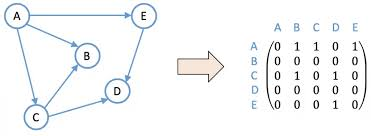

La suma y resta de determinantes de matrices son útiles para:
Resolver sistemas de ecuaciones lineales: Los determinantes se utilizan en la regla de Cramer para encontrar las soluciones de sistemas de ecuaciones lineales.
Hallar la inversa de una matriz: El determinante se usa en el cálculo de la matriz adjunta, que es un paso esencial para encontrar la inversa de una matriz.
Comprender las transformaciones lineales: Los determinantes proporcionan información sobre cómo se transforman las áreas o volúmenes bajo una transformación lineal.
Análisis de sistemas de ecuaciones lineales: El determinante de la matriz de coeficientes de un sistema de ecuaciones indica si el sistema tiene una solución única, ninguna solución o infinitas soluciones.
Geometría: Los determinantes pueden usarse para calcular el área de paralelogramos y el volumen de paralelepípedos.
En resumen, la suma y resta de determinantes, aunque menos comunes que el cálculo del determinante individual, son herramientas importantes para la resolución de problemas en álgebra lineal, geometría y otros campos relacionados.
